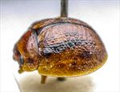
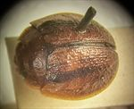
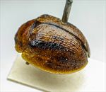
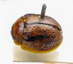
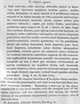

Click on images to enlarge
{kind=link}

Paropsis fumata type specimen, lateral view
{kind=link}

Paropsis fumata type specimen, dorsal view
{kind=link}

Paropsis fumata type specimen
{kind=link}

Paropsis fumata type specimen
{kind=link}

Paropsis fumata, description
Name
Trachymela fumata (Blackburn, 1897)
Type specimen
Location: BMNH
Label data: “Type” (red-bordered circle), “6251 Ad. T”, “Blackburn coll. 1910-236.”, “Paropsis fumata, Blackb.”
Male; Size: 6.05 x 5.1 x 2.8 mm; A-A: 1.02 mm, HCE/BL = 24.5% (approx, obtained from measurement on a photo of lateral view).
Blackburn’s description is very accurate – a brown beetle with a broad dark band on each elytron extending back from humeral callus.
Original description
[Original description shown in figure, translated from Latin using ChatGPT, 04/2026]
♂. Broadly sub-ovate, very convex, with the greatest height (seen from the side) situated before the middle of the elytral margin; moderately shining; ferruginous, with two spots on the head, the external verrucae of the pronotum, and on the elytra some ill-defined spots or streaks and some of the verrucae pitchy; underside more or less infuscate. Head rather closely and strongly punctulate. Pronotum broader than long in the ratio of about 2⅔:1, widening from the apex to well beyond the middle; transversely impressed behind the apex; somewhat uneven, closely and rather strongly, slightly rugulose-punctulate (more coarsely at the sides); sides moderately rounded, not flattened; hind angles rounded. Scutellum very sparsely or scarcely punctulate. Elytra not depressed beneath the humeral callus, not impressed behind the base; punctures arranged somewhat in series, but not very strongly nor distinctly, and fairly uniform; verrucae small, fairly numerous, rather indistinct, and scarcely in rows; intervals rugulose, here and there forming transverse wrinkle-like marks and partly obscuring the punctures; marginal area rather broad and distinctly separated from the disc by a shallow but continuous groove toward the apex; inner margin of the humeral callus scarcely more distant from the suture than from the lateral margin of the elytra. Basal ventral segment sparsely and rather finely punctulate. Length 3 lines (~6.4 mm); width scarcely 2⅖ lines (~5 mm).
Notes
Blackburn (1897) deals with P. fumata as part of his 'subgroup iv' (i.e., those species without "strongly marked characters", and whose greatest height is considerably in front of the middle of the elytral margin). Within that group, he characterises it as:
(1) prothorax not (or scarcely) explanate at the sides;
(2) the verrucae unpunctured, or nearly so;
(3) elytra not having a sharply defined discal transverse, wheal-like ridge;
(4) sub-humeral depression wanting;
(5) elytral interstices closely rugulose, concealing the puncturation.
The type specimen of T. fumata is morphologically almost identical to typical specimens of Ta122. In addition, its size, A-A/BL ratio and HCE/BL fit almost exactly the expected values for that species.
References
Blackburn, T. 1897, "Revision of the genus Paropsis. Part II", Proceedings of the Linnean Society of New South Wales, vol. 22, 166-189 (page 177).
Copyright © 2026. All rights reserved.